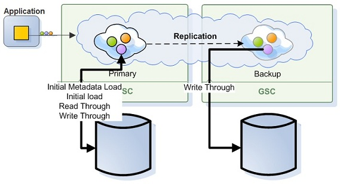

Direct
When running in direct persistency mode (i.e. Read-Write Through) the data grid interacts with the data source to persist its data where the client application would get the acknowledge for the data grid operation only after both the data grid and the SpaceDataSource acknowledged the operation. With this persistency mode, the data grid operations performance would be heavily depended on the speed of the SpaceSynchronizationEndpoint to commit the data and provide acknowledge back to the data grid for the successful operation of the transaction. When having a mapping layer in between the data grid and the data source that converts the data grid objects to relational database tables data (i.e. Hibernate), the time which takes to perform the conversion would also impact the acknowledge time and the application overall performance.
The above means you should be careful when using this persistency mode in case your application have the requirement to respond quickly (low latency) and scale in linear manner.
Asynchronous Persistency mode allows you to delegate the data grid operation to the data storage as a background activity without affecting application performance.
When the application reading data from the data grid there are two operational modes you should consider:
Having All Application Data within the data grid - Enabled when running in ALL_IN_CACHE Cache policy mode. The data grid will not perform any lazy load in case matching object can't be found within the data grid . This more provides the most deterministic performance.
Having a subset of the Application Data within the data grid - Enabled when running in LRU Cache policy mode. The data grid will perform lazy load (i.e. Read Through) in case of matching object can't be found within the data grid . Lazy load might impact the performance and the scalability of the application.
See the Memory Management Facilities for details about the differences between ALL_IN_CACHE and the LRU cache policies.
The Cache policy mode impacts also the initialization of the data grid instance and the way it is reading data from the data source to bootstrap itself.
With ALL_IN_CACHE Cache policy - Each data grid instance iterating through the database and loading all the relevant data.
With LRU Cache policy - Each data grid instance iterating through the database and loading only partial amount of data (based on the Initial-load , memory-usage and Cache Size settings).
See the Space Persistency Initial Load for details how you can change the default behavior of the data grid bootstrapping process once started.
Direct persistency mode supports the following database topologies:
With the central database topology, a single database instance is used to store all the data grid data. In this case only the primary data grid instance will update the database. The backup data grid instance will not update the database. The backup data grid instance will update the database only once it will turn to be a primary in case of a failure or shutdown of the primary IMDG instance.
A Data Grid running in Direct persistency mode using central database topology, having all data within the data grid would have the following configuration:
<bean id="hibernateSpaceDataSource" class="org.openspaces.persistency.hibernate.DefaultHibernateSpaceDataSource">
<property name="sessionFactory" ref="sessionFactory"/>
</bean>
<bean id="hibernateSpaceSynchronizationEndpoint" class="org.openspaces.persistency.hibernate.DefaultHibernateSpaceSynchronizationEndpoint">
<property name="sessionFactory" ref="sessionFactory"/>
</bean>
<os-core:embedded-space id="space" space-name="space" schema="persistent" space-data-source="hibernateSpaceDataSource"
space-sync-endpoint="hibernateSpaceSynchronizationEndpoint">
<os-core:properties>
<props>
<!-- Use ALL IN CACHE - No Read Performed from the database in lazy manner-->
<prop key="space-config.engine.cache_policy">1</prop>
<prop key="cluster-config.cache-loader.external-data-source">true</prop>
<prop key="cluster-config.cache-loader.central-data-source">true</prop>
</props>
</os-core:properties>
</os-core:embedded-space>
With the distributed databases topology, each data grid instance uses its own database instance to store its data. In this case both the primary and the backup data grid instances will update the database once data grid operation is called or being replicated (to the backup).
A data grid running in Direct persistency mode using distributed databases topology (non-central), having all the data within the data grid would have the following configuration:
<bean id="hibernateDataSource" class="org.openspaces.persistency.hibernate.DefaultHibernateSpaceDataSource">
<property name="sessionFactory" ref="sessionFactory"/>
</bean>
<bean id="hibernateSpaceSynchronizationEndpoint" class="org.openspaces.persistency.hibernate.DefaultHibernateSpaceSynchronizationEndpoint">
<property name="sessionFactory" ref="sessionFactory"/>
</bean>
<os-core:embedded-space id="space" space-name="space" schema="persistent" space-data-source="hibernateSpaceDataSource">
space-sync-endpoint="hibernateSpaceSynchronizationEndpoint">
<os-core:properties>
<props>
<!-- Use ALL IN CACHE - No Read Performed from the database in lazy manner-->
<prop key="space-config.engine.cache_policy">1</prop>
<prop key="cluster-config.cache-loader.external-data-source">true</prop>
<prop key="cluster-config.cache-loader.central-data-source">false</prop>
</props>
</os-core:properties>
</os-core:embedded-space>
See the Space Persistency section for full details about the properties you may configure.
The following table lists the supported options:
| Cache Policy | Central Data Source | Replication Recovery enabled | Amount of data loaded via the initial load | Data filtering at the initial load enabled |
|---|---|---|---|---|
| LRU | YES | NO | Up to amount of initial load percentage value * | YES |
| ALL_IN_CACHE | YES | YES | All database data | YES |
| LRU | NO | YES | Up to amount of initial load percentage value * | NO |
| ALL_IN_CACHE | NO | YES | All database data | NO |
* Up to amount of initial load percentage value (50%) that is the percentage of cache_size value.
When running with LRU cache policy and SpaceDataSource/SpaceSynchronizationEndpoint setup:
Lazily loaded objects (as a result of a cache miss) and objects loaded via initial data load are not replicated to the backup or replica space.
Write operations and update operations are not replicated when running in distributed DB mode.
Evicted objects are replicated when using the take operation with the EVICT_ONLY modifier.